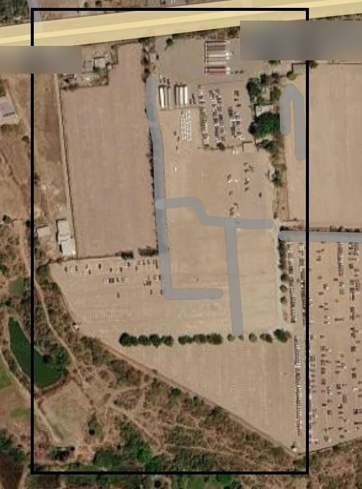

I am Aditya Date, a data science master's student in Trier with hands-on experience in REST APIs, Docker, dashboards and LLM evaluation. I am looking for a Werkstudent role where I can contribute from week one and keep learning fast.
I am Aditya Date, a data scientist and data center entrepreneur. I am looking for a company or investor interested in developing a data center on my land, with a data-driven approach to site decisions.
M.Sc. Data Science at Universität Trier since April 2026, expected completion 2028. I am building a strong base in data science while working on practical projects.
At Winjit I built REST APIs and worked with Docker, including creating and upgrading images and deploying them. I care about work that actually ships.
I am an active data center entrepreneur, looking for a company that can invest in my land for a data center. It gives me a business view on infrastructure, energy and long-term planning.
Short term: a working student job in the data science sector in Germany, ideally in a team where I can apply my skills and learn from experienced colleagues. Long term: to combine data science and digital infrastructure, from analysis to real projects on the ground.
Most data scientists work on the data that data centers store. I also work on where data centers should exist. A site decision is a data problem, and this is how I think about it.
Structured thinking, dashboards, APIs and model evaluation, used to turn messy inputs into clear decisions.
A real land asset and a real goal: finding the right partner to build digital infrastructure on it.
I am actively searching for a company that can invest in my land for a data center. If you develop, operate or fund data center projects, I would be glad to share the details of the site and talk about how we could work together.
Nashik, Maharashtra, with direct frontage on the Nashik-Trimbak Road. A contiguous, non-agricultural plot with a live HT connection, suited to edge, disaster recovery, enterprise colocation and AI inference capacity for the Mumbai, Pune and Nashik industrial belt.

Live HT connection on site, MSEDCL substation under 1 km away, MSEDCL letter already obtained.
Flat, fully concreted hardstanding, already NA for commercial and industrial use. No conversion needed.
A dam and river lie behind the plot, a strong source for cooling, subject to Water Resources Department permission.
The plot sits directly on the Nashik-Trimbak Road, with easy heavy-vehicle access.
Family-owned with clear, undisputed title and one point of contact for all discussions.
Neighbouring landowners are open to discussions about expanding the campus later, subject to agreement.
Subject to design and sanctioned load. Scale-up would use a dedicated feeder or intake, planned with MSEDCL and the operator.
The exact address, survey number, GPS pin, 7/12 extract, MSEDCL letter and photographs are shared with serious operators, developers and investors after a short introduction. Tell me a little about you and I will reply by email.
Information is indicative and given in good faith for preliminary discussion with prospective lessees, development partners and their advisors. It is subject to verification, due diligence and definitive documentation. The site boundary is approximate. Nothing on this page constitutes an offer or a binding commitment. Prepared October 2026.
Built REST APIs, created and upgraded Docker images, and handled deployment.
Freelance evaluation of large language model and NLP outputs.
Active founder-side work on bringing a data center to my land, including the search for an investment partner.
Master's programme in data science in Trier, Germany.
Two independent projects built as a data science portfolio for the eMobility sector. The first predicts charging-station failures with a Random Forest model. The second is a Streamlit dashboard that maps station telemetry on an interactive map and charts voltage and temperature over time. Both come with a script that generates sample data and a reproducible setup.
A Power BI dashboard on the energy market, built as a static version and an interactive version so different audiences can explore the data in the way that suits them.
A churn prediction analysis for customers, worked through in a Jupyter notebook.
A GAN-based artifact restoration project in Python, published open source under the MIT license.
A Python project on validating the quality of master data. Details are in the repository.
An SEO optimization and multi-platform integration project for an online packet shop. The repository is organized into analytics, automations, a dashboard, integrations, an SEO audit and a Shopify integration, with written project documentation.
Designed and built REST APIs, and worked on Docker image creation, upgrades and deployment.
Freelance work assessing the quality of language model outputs.
An exploratory data analysis notebook with a documented list of dependencies, a good example of my analysis fundamentals.
Took part in an insurance-focused hackathon, working on a data problem under time pressure in a team.
All public code is on github.com/Adityadate.
Whether you are hiring a working student or looking at land for a data center, I would like to hear from you. Based in Trier, Germany.